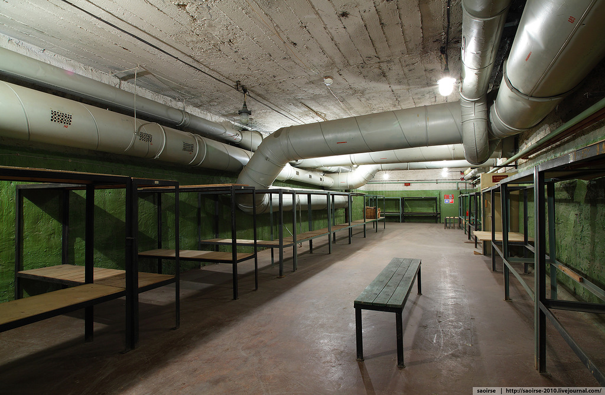
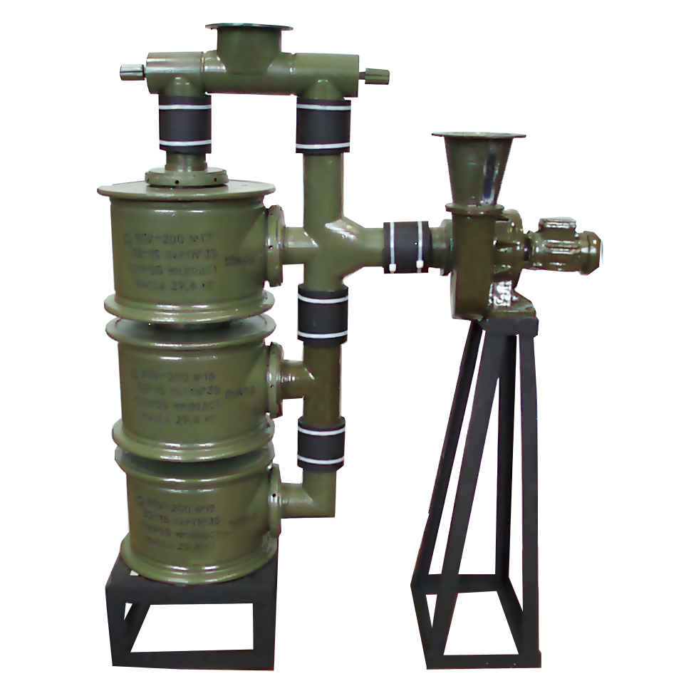
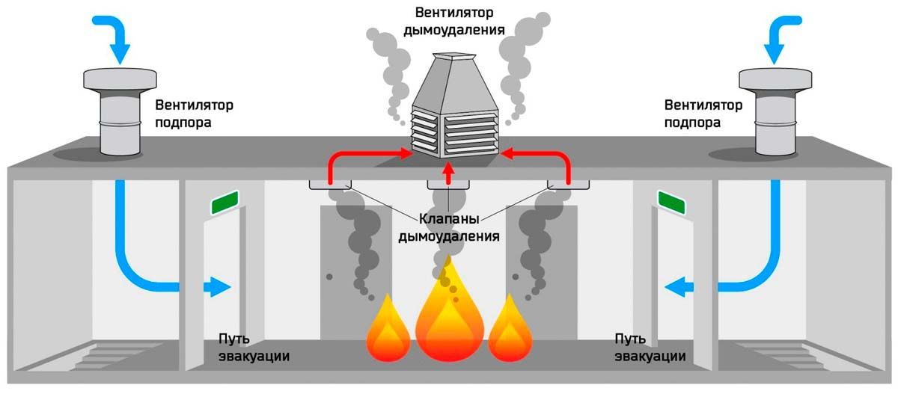

Назначение и устройство КСЗ
Коллективные средства защиты обеспечивают безопасность групп людей в зонах химического заражения без необходимости постоянного ношения индивидуальных средств защиты.
💡 Принцип герметичности
В современных убежищах поддерживается режим избыточного давления (подпора воздуха). Благодаря этому внутренний очищенный воздух постоянно стремится наружу, не оставляя ядовитым газам ни единого шанса просочиться через щели или дверные проемы.
Основные элементы:

Защитные убежища и бункеры
Герметичные сооружения с прочным железобетонным каркасом, оборудованные защитно-герметическими дверями.

ФВУФильтровентиляционная установка — комплексы для очистки наружного воздуха от отравляющих веществ и забора его в убежище.
Системы очистки воздуха, задерживающие пары ядовитых веществ, аэрозоли и радиоактивную пыль.

Избыточное давление (Подпор)
Создание внутри помещения повышенного воздушного давления для предотвращения затекания газов снаружи.